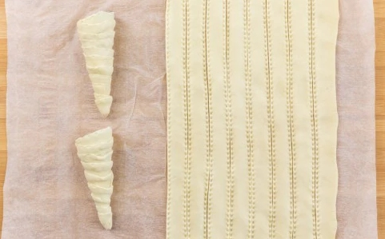
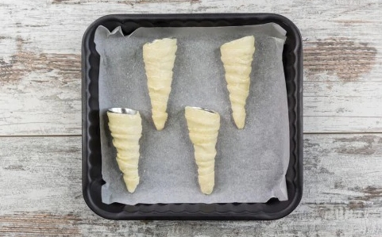
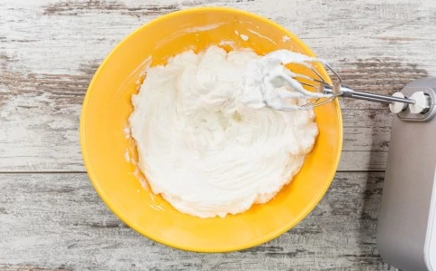
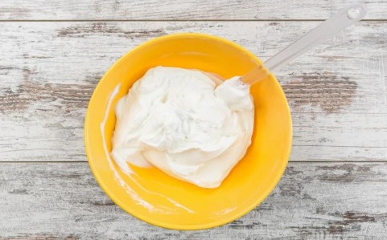
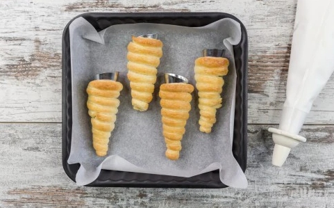
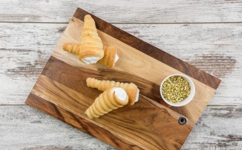
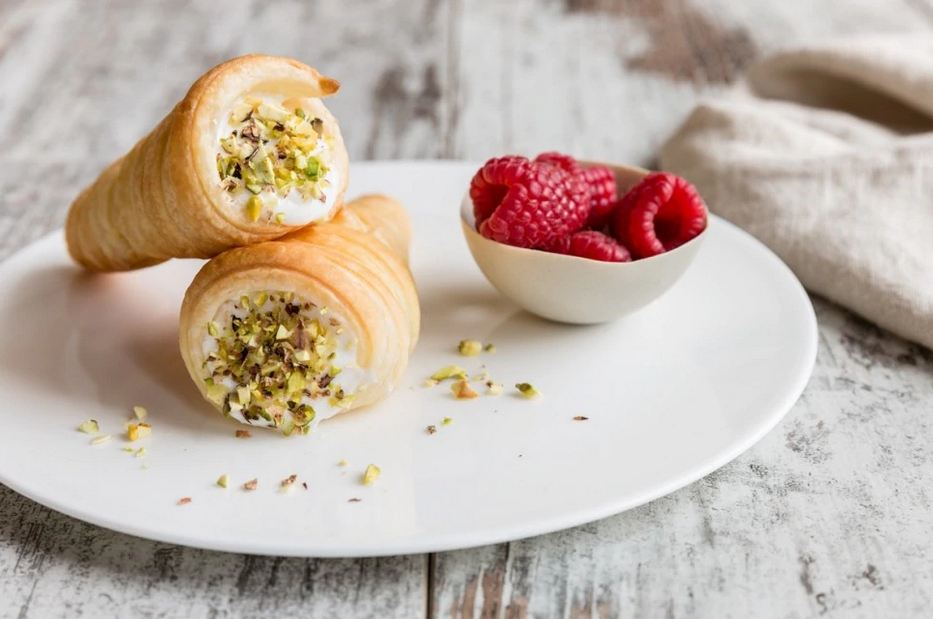

| Cenere® |
Cannoncino alla PannaOrigini
Le sue origini sono, senza ombra di dubbio piemontesi, anche se non è possibile attribuirne con certezza la paternità. Ricetta
IngredientiPer la base
Per il riempimento
Per decorare
Preparazione dei Cannoncini alla PannaFormazione dei Cannoncini
Per preparare i cannoncini alla panna, stendete la pasta sfoglia sulla superficie di lavoro e, utilizzando
una rotella tagliapasta, ricavate tante strisce della larghezza di 2 cm e circa 30 cm di lunghezza.
 Cottura
Disponete i cannoncini su una teglia rivestita di carta forno, spennellateli con il burro fuso (escludendo la zona a contatto
con la placca) e cospargeteli con dello zucchero semolato.
 FarcituraNel frattempo, in una ciotola montate la panna con uno sbattitore elettrico. Unite lo yogurt greco, lo zucchero a velo e mescolate delicatamente fino a ottenere una crema omogenea.
  Sfornate i cannoncini, fateli intiepidire e rimuovete i cannelli. Al momento di servire trasferite la crema in un sac à poche con bocchetta a stella da 15 mm e farcite i cannoncini.
  Servite i cannoncini alla panna decorati con pistacchi tritati .
 Conservazione
Ptete conservare i cannoncini di sfoglia per circa 2 giorni in frigorifero, anche se una volta farciti tenderanno ad assorbire l’umidità della crema perdendo progressivamente la loro friabilità e croccantezza. |